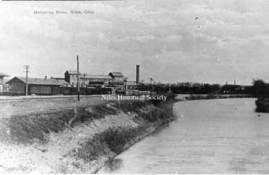
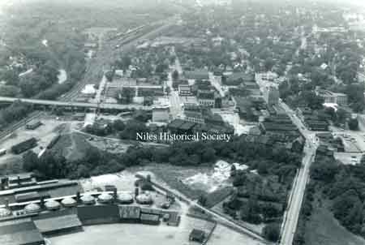
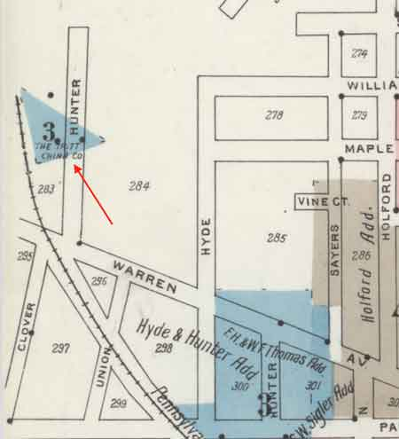

Twelve Important Industries

Photo of the Harris Automatic Press Co. located in Niles for many years. Constructed about 1904 and operated until 1914, after a prolonged strike moved operations to Cleveland.
{kind=link}

The Niles Firebrick Co. was constructed by John R. Thomas in 1872 and was one of Niles' most enduring industries.
{kind=link}

Fire Brick Reorganized

Erie Street view of the Niles Car and Manufacturing Company, makers of one of the finest lines of plush electric cars of the area.

Niles Car and Manufacturing Company

American Sheet & Tin Plate Co., made first tinplate in the US. Constructed in 1891 by Falcon Iron & Nail Co., originally the James Ward Co. but acquired by the Arms Bros. & John Stambaugh after the 1873 Ward failures.

Empire Iron and Steel Company

Empire Iron and Steel Company

Smoky industrial skyline of Niles at the peak of iron manufacturing, descibed by historian Howe in 1888 as "among the most extensive in the state."

In 1902, F. F. Bentley, A.J. Bentley and A.J. Leitch erected the Ohio Galvanizing and Manufacturing Company plant at the foot of Ann Street.

Location of Ohio Galvanizing Company on 1918 map.

Russia Sheet Mill copied from a picture in a souvenir pamphlet by Sykes Steel Roofing Co. of Chicago & Niles in 1893.

Standard Boiler & Plate Iron Co. started in 1906 by D. J. Finney, E. A. Gilbert and others.

The Standard Boiler and Plate Iron Company

A view from Emma Streeet looking north from Warren Avenue when the WPA project was improving the streets in Niles.

Columbia Manufacturing Co. -Bicycle tubing- located where the Niles Forge stood until 1975

The Stanley Company was constructed in 1910 by the company out of New Britain, Conn. It manufactured nuts, bolts, washers and small fittings. Operations were limited after WWII and the plant was sold in the 1950's. In 1976, it was rented to Aluminum Billets, Inc.

Constructed in 1910 by Fostoria Gass Co., many of the first employees moved here from Fostoria, Ohio.

Niles Glass Fostoria Works.

Bradshaw Pottery in 1901. It was built on the P.Y. & A right of way and Hunter Street.
{kind=link}

The Tritt China Company